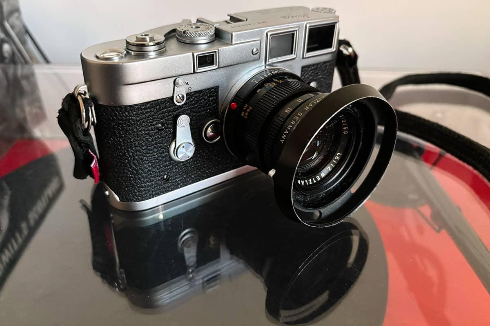
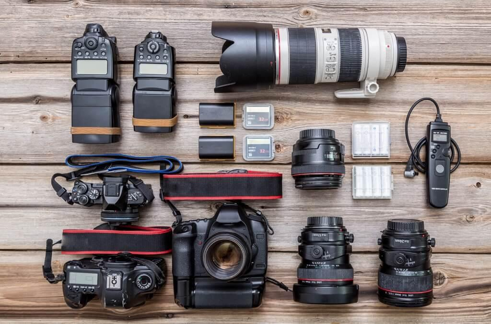
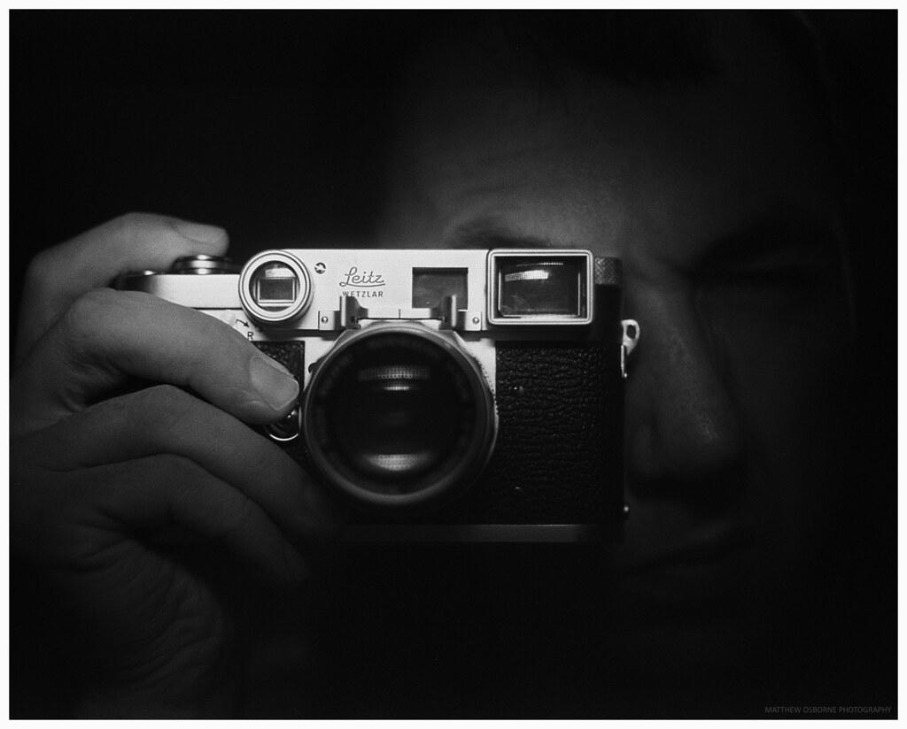

From fundamentals to professional mastery. A structured curriculum designed by analyzing leading university programs worldwide — built to take you from your first frame to a sustainable creative practice.
Always shoot in RAW for maximum editing flexibility.
From breathtaking landscapes to intimate portraits, discover the diverse world of professional photography. Click any tile to dive into that genre's curriculum.
Understanding your equipment is fundamental to mastering photography. Our curriculum covers everything from classic film cameras to cutting-edge digital systems — the tools matter, but the eye matters more.
DSLR · Mirrorless · Film
Prime · Zoom · Specialty
Strobes · Tripods · Modifiers
Software · Color · Workflow



Four progressive levels that take you from your first shutter press to a sustainable professional practice. Each level builds on the last — no shortcuts, no gaps.
Hands-on modules with assignments, critiques, and reference shoots for every genre.
Of structured learning including reading, watching, and — most importantly — shooting.
Foundation, Intermediate, Advanced, and Professional — a path that grows with you.
Beginner · 3-4 mo
4-5 months
5-6 months
Ongoing
Leverage technology to accelerate your learning and get personalized feedback that adapts to your style, pace, and goals.
32 project ideas across every genre, a research-backed phone vs camera comparison, and 40+ tips & tricks — the complete photography learning hub.
Open ResourcesUpload photos for instant feedback on composition, exposure, color balance, and sharpness — with actionable suggestions tied back to specific lessons.
Try NowDiscover your unique photography style through our interactive assessment — a guided 12-question calibration that maps your eye to a genre profile.
Try NowTest your knowledge and get placed at the right curriculum level — so you spend time on what moves you forward, not what you already know.
Try NowAI-recommended lesson sequence based on your style, goals, and pace. The curriculum adapts to you — not the other way around.
Try NowWhat changes when the curriculum meets the work. A few voices from students who completed the program and built practices around what they learned.
The structured curriculum helped me develop a consistent style. I went from snapshots to a body of work I'm proud to show — in eight months.
Understanding light transformed my landscape work completely. I now read scenes differently — the way the light will fall, the moment to wait for.
The business modules gave me confidence to launch my career. Pricing, licensing, client work — I stopped guessing and started getting paid properly.
Three fundamentals you'll use on every shoot, every genre, forever. Master these and the rest is practice.
Place key elements along grid lines for balanced compositions. The eye finds tension at intersections — use that.
Shoot during sunrise and sunset for warm, soft natural light. The hour after sunrise and before sunset is your friend.
Use roads, fences, or rivers to guide the viewer's eye through the frame. Compositional rails that carry the gaze.